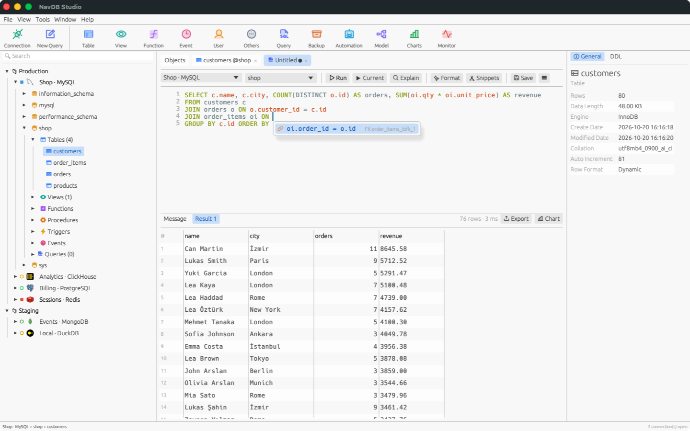

NavDB Studio
A fast, native SQL & NoSQL database client for the Mac
NavDB Studio brings your databases into one native app. Connect to MySQL, MariaDB, PostgreSQL, SQLite, SQL Server, MongoDB, Redis, ClickHouse, DuckDB, Cassandra, Elasticsearch and many more engines, then browse, query and design them with the same tools.

Explore and edit data
Navigator for every object, a spreadsheet-style grid with inline editing, filters, sorting and a form view.
Write SQL faster
Context-aware autocomplete, JOIN conditions from foreign keys, parameter hints, EXPLAIN, snippets and history.
Design
Table designer for columns, indexes, keys, checks and triggers with a live SQL preview, plus view and routine designers.
Move data
Import CSV, JSON and XML, export to many formats, dump and restore, generate test data.
NavDB Studio Pro
An optional in-app subscription adds unlimited saved connections, Data Transfer, Structure and Data Sync, ER model diagrams, charts and dashboards, automation and connection import.